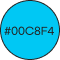

싱싱고
팀을 구성하여 애플리케이션의 기획부터 디자인, 구현까지 함으로써 원활한 의사소통 능력과 리액트 기술을 증진시킨다.


싱싱고
팀을 구성하여 애플리케이션의 기획부터 디자인, 구현까지 함으로써 원활한 의사소통 능력과 리액트 기술을 증진시킨다.
메인 색상
포인트 색상
→ localStorage를 이용하여 브라우저에 데이터를 저장 후 불러오는 방식으로 유지하였다.
→ fullcalendar 라이브러리를 발견한 후 달력 기능과 날짜별로 이벤트를 띄우는 기능을 활용하여 원하는 기능을 구현하였다.
→ uuid를 이용하여 식료품마다 고유의 id값을 가지게 한 후 해당 식료품의 id를 찾아 삭제할 수 있도록 삭제 함수를 수정하였다.